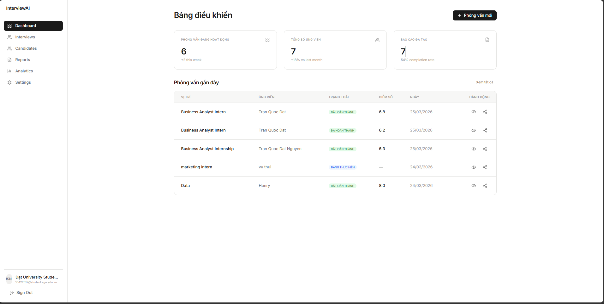
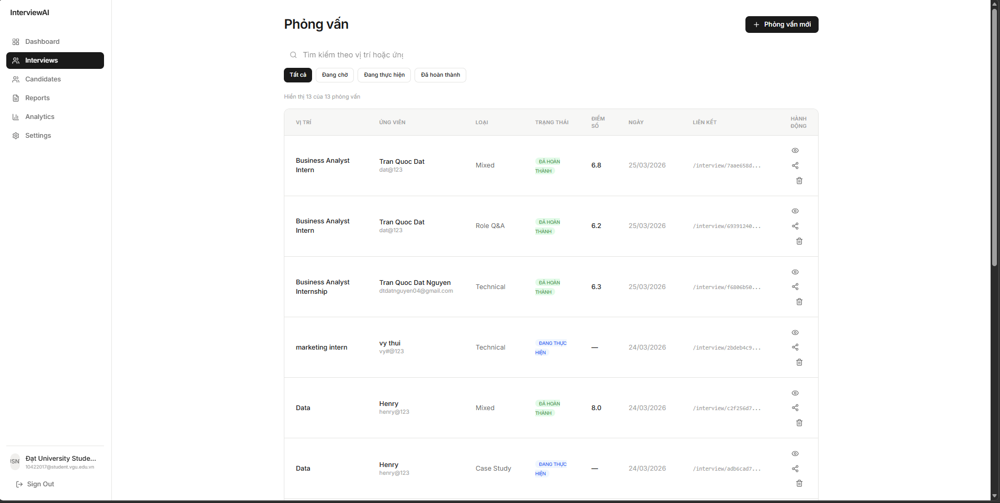
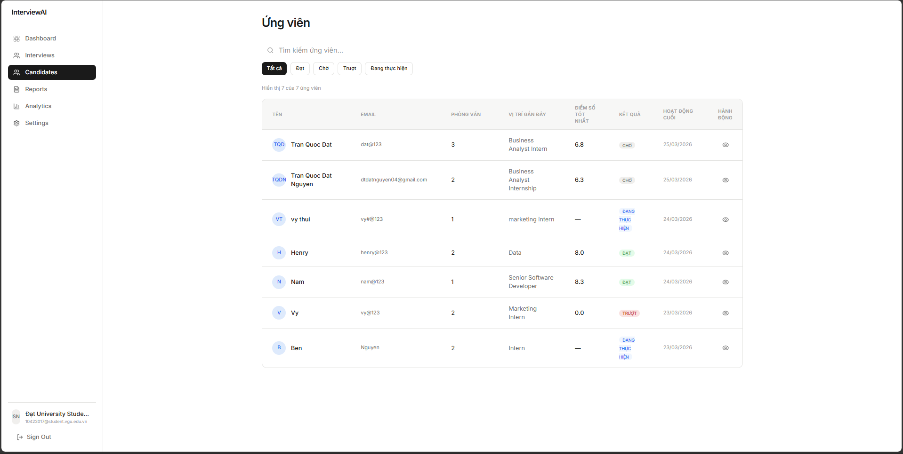
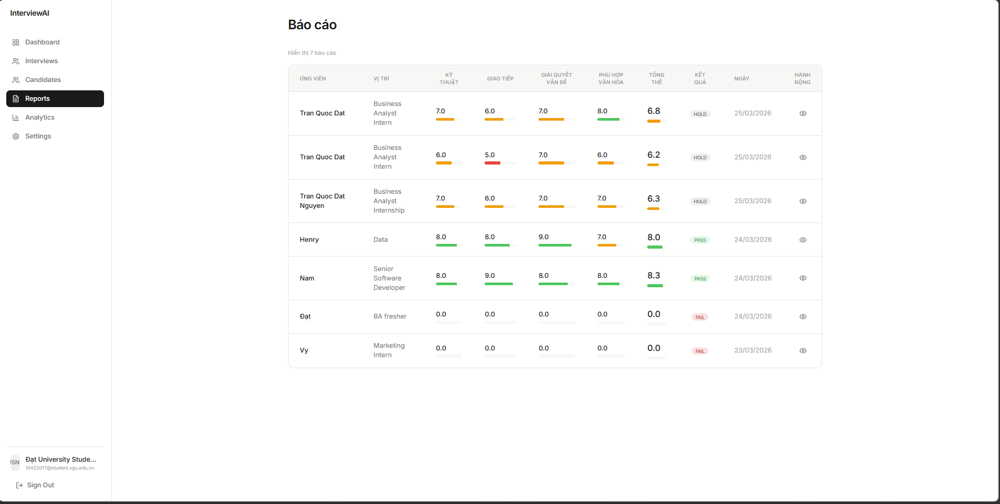
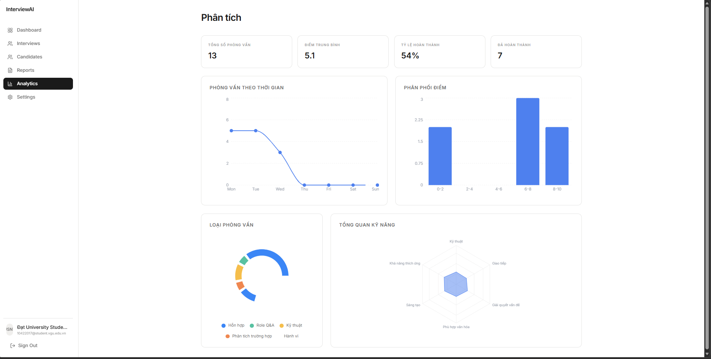
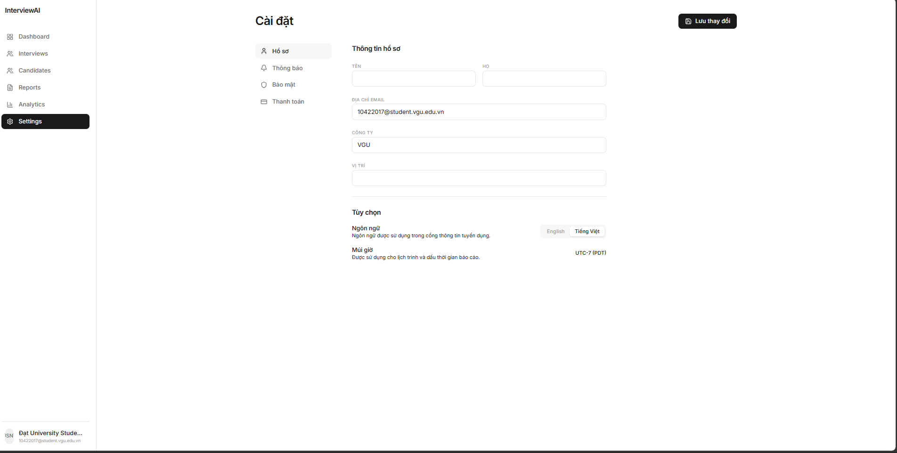

AI Interview Project
Project Overview
AI-focused project exploring how large language models can support interview preparation, from generating realistic questions to analyzing answers and giving structured feedback.
Dynamic Question Generation
Uses AI to generate behavioral and technical questions tailored to the role, difficulty level, and topics that the user selects.
Answer Capture & Analysis
Collects user answers (typed or transcribed) and runs them through an evaluation rubric to highlight strengths, gaps, and suggested improvements.
Feedback & Progress Tracking
Summarizes each session with ratings and concrete tips, helping users track improvement over time across competencies like communication and problem solving.
Problem & Goals
Many candidates struggle to get realistic interview practice and objective feedback. This project aims to build an always-available AI interviewer that can simulate common interview scenarios and give structured, repeatable feedback.
Key Objectives
- Generate diverse, role-appropriate interview questions automatically.
- Evaluate answers against clear criteria (structure, clarity, depth, relevance).
- Provide actionable suggestions that users can immediately apply.
Target Users
- Students preparing for internships or graduate roles.
- Professionals practicing for data or software engineering interviews.
- Anyone who wants structured practice without a human partner.
Architecture & Workflow
The project is built as a lightweight web application that orchestrates prompt templates, language model calls, and evaluation logic.
Core Components
- Question Generator: creates interview questions based on role, topic, and difficulty.
- Answer Analyzer: scores answers and extracts key strengths and weaknesses.
- Feedback Engine: formats feedback into structured rubrics and tips.
Typical Session Flow
- User selects role, type of interview, and topics.
- System generates a set of questions and presents them one by one.
- User answers; the system evaluates and stores results.
- Session summary displays scores, feedback, and suggested next steps.
Tools & Technologies
Languages & Frameworks
Python, Streamlit or a similar web framework, REST/HTTP for API calls.
AI & NLP
Large language model API (e.g., OpenAI), prompt engineering, evaluation prompts.
Data & Storage
Lightweight database or cloud storage to keep session history and feedback.
UI Prototypes & Screens
The interface was prototyped as a clean admin-style web app with dedicated pages for dashboard, interviews, candidates, reports, analytics, and settings. Below are example screens from the working prototype.






What I Learned
This project strengthened my understanding of prompt design, evaluation of language-model outputs, and how to wrap AI capabilities in a user-friendly web experience. It also reinforced good practices around separating prompt templates, business logic, and UI concerns.